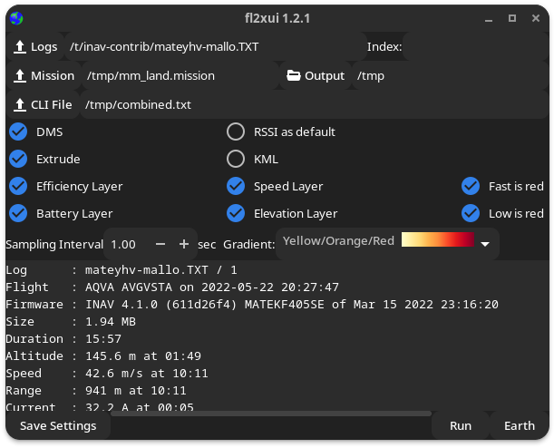
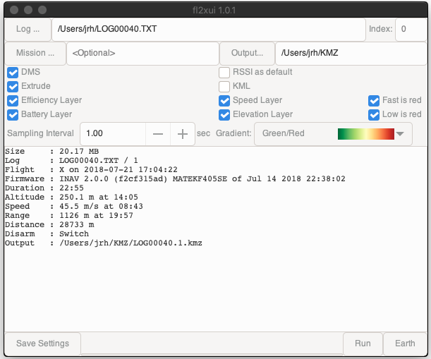
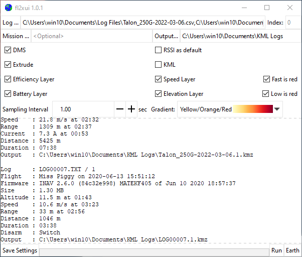
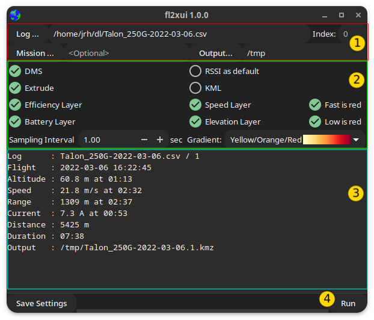

fl2xui#
Overview#
fl2xui is a cross-platform GUI for the flightlog2kml tool that converts (inav) flight logs to beautiful, annotated KML or KMZ files for visualisation in Google Earth.
fl2xui provides a consistent user interface across Linux, FreeBSD, MacOS and Windows.
Linux /FreeBSD (dark theme)#

MacOS#

Windows#

Features#
- Multiple logs (Blackbox, OTX/ETX CSV, BulletGCCS)
- Summary information
- Easy access to common visualisation options.
- Save current settings as default
User Interface#

File / index selection area (1)#
- Log... : Opens a file chooser to select log files. Multiple files may be selected. The files may be a combination of Blackbox logs, OpenTX / EdgeTX CSV or BulletGCSS logs.
- Output... : Opens a file chooser to select the output directory. The defaults (no selection) are:
- Linux, FreeBSD, MacOS : Current (working) directory, typically
$HOMEwhen launched from a desktop environment. - Windows : "Documents" (e.g.
C:\Users\USERNAME\Documents).
- Linux, FreeBSD, MacOS : Current (working) directory, typically
- Mission... : Optional mission file (single selection). MW XML format (e.g. from mwp or inav configurator).
- Index : If 0 (default), processes all logs in (each) file; if non zero, processes a single log at the specified index.
Visualisation Options (2)#
- DMS : Display positions as degrees / minutes / seconds (
DD:MM:SS.sss) vice decimal degrees (DD.dddddd). - Extrude : Extrude flight points the ground.
- RSSI as default : Set the RSSI layer as the default (vice Flight Mode).
- KML : Generate uncompressed KML (vice compressed KMZ).
- Efficiency Layer : Include an efficiency layer in the output.
- Battery Layer : Include a battery (VBAT) layer in the output.
- Speed Layer : Include a speed layer in the output.
- Fast is red : Invert the speed colour gradient, so the fastest speed is red
- Elevation Layer : Include an elevation layer in the output.
- Low is red : Invert the elevation colour gradient, so the lowest elevation is red
- Gradient : Select the colour gradient for RSSI / Efficiency layer)
- Red - shades of red
- Green / Red - Green (best) to red (worst)
- Yellow / Orange / Red - Yellow (best) to red (worst) via orange
Output Area (3)#
- Output Area : Scrolled window showing process or error messages. You can also drag and drop log and mission files into this area.
Progress bar / Save Settings / Run / Earth buttons (4)#
- Current settings may be saved as defaults
- "Run" button is enabled when log files have been selected
- "Earth" button is enabled when a KMZ/L is available and Google Earth was not launched by fl2xui. This button launches Google Earth, with the last generated KML/Zs (on MacOS it appears not possible to load the KML/Z files). This function may also be invoked with CTRL-L.
- An oscillating progress bar is displayed when a conversion is in process (after clicking "Run").
Defaults#
The defaults for run time options are taken from the flightlog2kml configuration file:
- All POSIX OS : ~/.config/fl2x/config.json
- Windows : %LOCALAPPDATA%\fl2x\config.json
See also flight2kml wiki example and Earth definition if Google Earth is not automatically detected for launch.
Dependencies#
fl2xui depends upon the following open source packages:
You also need to install flight2kml and INAV's blackbox_decode from their respective repositories.
Installation#
Debian (and derivatives) have a binary installer in the fl2xui release area.
UI Component#
- The
masterbranch is based on gtk4. There is alegacybranch based on gtk3, which is no longer actively maintained. Thelegacybranch is intended for older Linux distros that do not offer gtk4. - The
masterbranch requires theblueprint-compiler, if your distro cannot provide this, a local copy will be downloaded when the build is first configured. - You will also require
gobject-introspectionwhich may not (or may) be installed as a prior dependency. There is no harm in explicitly installing it.
Linux, FreeBSD#
- Debian package
*.debfor Debian / Ubuntu and derivatives in fl2xui release area. - Easily built from source
# Common GTK development packages for gtk4 vala meson ninja json-glib # gobject-introspection # Once (setup) meson build --buildtype=release --strip --prefix=~/.local # Build and install to ~/.local/bin (add to PATH if necessary) # or specify some other PATH element (/usr/bin, /usr/local/bin, ~/bin) meson install -C build
Windows#
-
Can be built from source using Msys2.
pacman -Syu pacman -S gtk4 vala meson ninja json-glib gobject-introspection # export the msys2 expression of /usr/share, such as export XDG_DATA_DIRS=$XDG_DATA_DIRS:/mingw64/share # now follow Linux instructions ... -
It is recommended that
blackbox_decodeandflightlog2kmlare in thefl2xui\bindirectory.
Look and Feel#
From fl2xui 0.0.5, the default theme is set to emulate the Windows 10 look and feel. This may be changed by copying the distributed fl2xui\etc\gtk-4.0\settings.ini (or fl2xui\etc\gtk-3.0\settings.ini for gtk3) to %LOCALAPPDATA%\gtk-4.0\settings.ini (%LOCALAPPDATA%\gtk-3.0\settings.ini) and editing some settings as required:
gtk-theme-name: sets the theme nameWindows10: Windows 10 theme emulationAdwaita: Default GTK themewin32: Ugly Windows 7 (more like Windows 95?) theme
gtk-application-prefer-dark-theme: set a dark theme0light theme1dark theme
The Window header bar (may be drawn by either the Windows window manager or the application).
This is controlled by the environment variable GTK_CSD, (0=Native, 1=GTK). This may be set as a user environment variable from the Windows Control Panel.
MacOS#
Not supported, reported not working but works for me . Using brew may help (or not).
# install requirements *at least* :
brew install meson vala gtk4 json-glib
# Once (setup)
meson setup build --buildtype=release --strip --prefix=~/.local
# Build and install to ~/.local/bin (add to PATH if necessary)
meson install -C build
Google Earth launcher#
fl2xui Attempts to detect the presence of Google Earth. Only if this fails is it necessary to add the name of the Google Earth executable in the configuration file:
-
On (non-macOS) POSIX (Linux, FreeBSD) platforms, where Google Earth is customarily on PATH, just the executable name is required, for example:
"ge-name" : "google-earth-pro" -
On Windows, the full path is required, for example (note back-slashes have to be escaped):
"ge-name" : "C:\\Program Files\\Google\\Google Earth Pro\\client\\googleearth.exe" -
On macOS, Google Earth is not auto-detected, so needs an entry like:
"ge-name" : "/Applications/Google Earth Pro.app/Contents/MacOS/Google Earth"It is also unlikely that macOS will actually load your files into Earth. Advice on how to resolve this would be appreciated.
Author and Licence#
(c) Jonathan Hudson
GPL v2 or later.